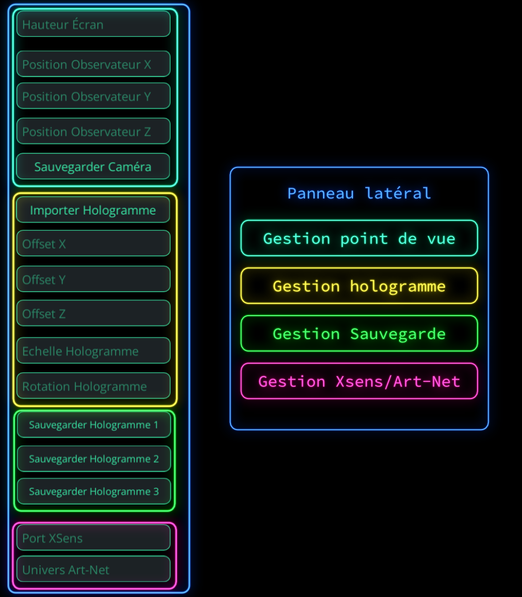
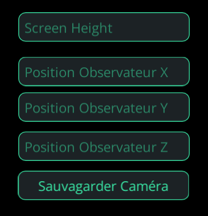
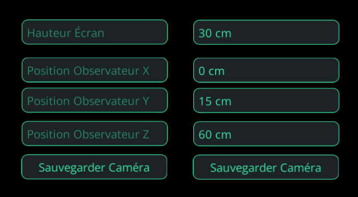
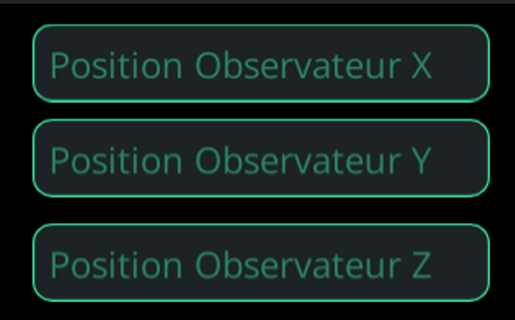
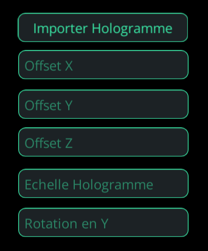

Interface
Le point central est le bas centre de l’écran, c’est à partir de ce point-là que toutes les modifications des coordonnées auront lieu à l’aide du panneau latéral, à activer avec la touche « Echap » du clavier.

Voici comment l’application se présente :
Hauteur de l'écran
Dans le bloc « Gestion de point de vue », on peut configurer la taille de l’écran sur lequel la projection aura lieu. Si l’écran, par exemple, mesure 4,5 mètres de hauteur, il faudra rentrer cette hauteur en centimètre, ici 450 centimètres.
Distance écran-public
Coordonnées en x : modifient la position de la personne de gauche à droite. Augmenter la valeur de x déplacera la vue vers la droite, la diminuer la déplacera vers la gauche.
Coordonnées en y : modifient la position de la personne en hauteur. Augmenter la valeur de y déplacera la vue vers le haut, la diminuer la déplacera vers le bas.
Coordonnées en z : modifient la distance entre l’écran et le public. Plus la valeur entrée est grande, plus cette distance est importante.
Importation hologramme
Dans le bloc « Gestion de l’hologramme » , le bouton “Importer Hologramme” permet d’ouvrir un explorateur, pour accéder à vos fichiers.
Sauvegarde d'hologramme
Sauvegarde d'une scène à l’aide des boutons présents dans le bloc « Gestion sauvegardes » en bas du panneau latéral. Importation des scènes respectivement avec les boutons F1, F2, F3.
Motion Capture
Utiliser le logiciel avec de la Motion Capture pour du temps réel : • ouvrir le logiciel Xsens Animate Pro (ou XSens MVN) • calibrer le modèle qui servira pour la Motion Capture • allumer un port en cliquant sur « Network streamer options », il nous servira plus tard • importer votre modèle 3D dans Unity (si celui-ci n'est pas compatible, le temps réel ne marcheras pas) • dans l'inspecteur de votre modèle, cliquez sur "Rig", puis choisir "Humanoid" dans 'Animation Type' • assurez-vous que votre modèle soit en T-pose (si non, modifier sa position) • glisser votre modèle dans le "MvnPuppet" • assurez-vous que le 'Controller' de 'Animator' de votre modèle soit à "None" • ajouter l'avatar de votre modèle dans l'avatar du "MvnPuppet"